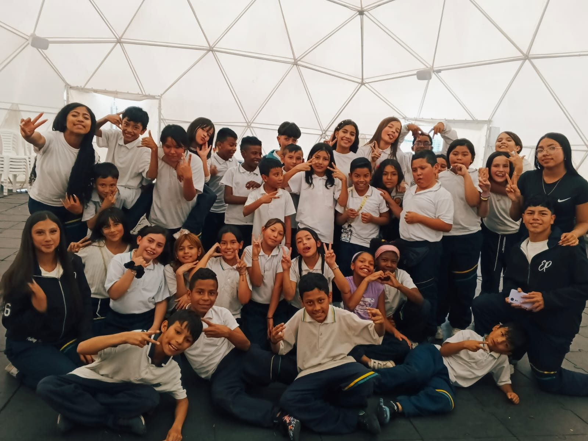
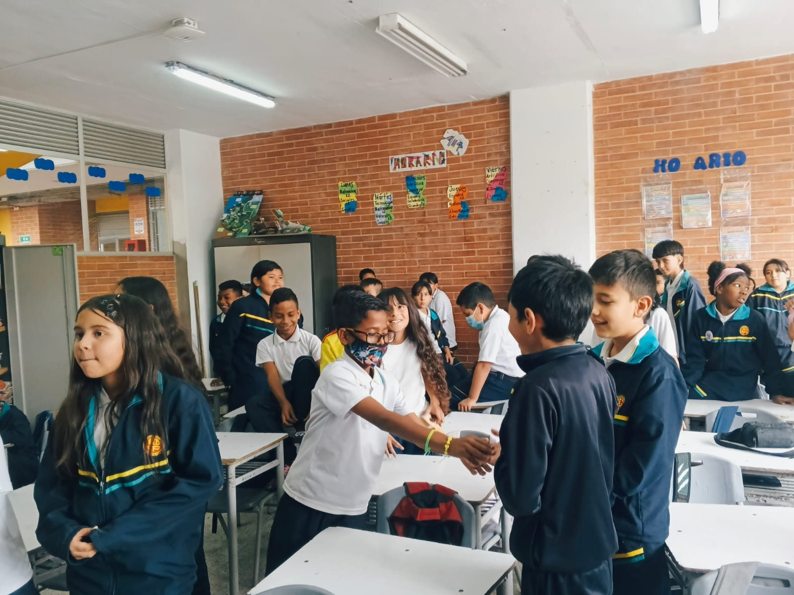

Gestores
Somos cuatro estudiantes de 11J que organizamos y desarrollamos las actividades con el curso 405, acompañados por nuestro docente tutor.
Ver másProyecto de grado · Gestión cultural
Somos estudiantes de grado 11J y quisimos demostrar que las actividades no tienen género. Este sitio presenta nuestro proyecto: quiénes somos, qué buscamos y cómo lo hicimos.
¿De qué manera las actividades lúdico-deportivas promueven la equidad de género en los niños y niñas del curso 405 del Colegio El Porvenir IED, jornada tarde?
Cada sección tiene una introducción en esta página y una página propia con más detalle. Use el menú de arriba o los botones de cada tarjeta para recorrerlas.
Somos cuatro estudiantes de 11J que organizamos y desarrollamos las actividades con el curso 405, acompañados por nuestro docente tutor.
Ver másNuestro proyecto se ubica en el eje «Cultura, convivencia y valores», porque las ideas sobre lo que es «de niños» o «de niñas» también son parte de la cultura del colegio.
Ver másTrabajamos en la línea «Deporte y género», que estudia cómo el juego y el deporte pueden mantener o cambiar las desigualdades entre hombres y mujeres.
Ver másQueremos promover la equidad de género en el curso 405 por medio de actividades lúdico-deportivas. Aquí están nuestro objetivo general y los cuatro específicos.
Ver másConozca el colegio, el curso y la situación que observamos: niños y niñas de 8 a 10 años que tendían a jugar y a formar grupos por separado.
Ver másExplicamos por qué es importante este proyecto y cómo el juego puede ayudar a mejorar la convivencia y a cuestionar los estereotipos.
Ver másLos conceptos y las teorías que nos ayudaron a entender el tema: gestión cultural, género, equidad, juego, aprendizaje social y educación emocional.
Ver másEl calendario de nuestras observaciones y de las 12 prácticas lúdico-deportivas realizadas entre agosto y septiembre de 2026.
Ver másAlgunos momentos que vivimos con el curso 405 durante las actividades.

